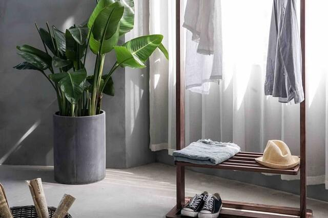

My Projects

Projek pertama saya ialah koding-mengoding, walaupun masih belajar saya sudah dapat sedikitnya membuat website ini.
Selain koding tak jarang juga saya melukis dan menggambar, ada beberapa hasil lukisan saya yang dapat anda lihat di instagram saya.

Saya juga senang untuk mendesain kamar menjadi aesthetic, maka saya tambahkan hobi saya itu menjadi projek design interior.